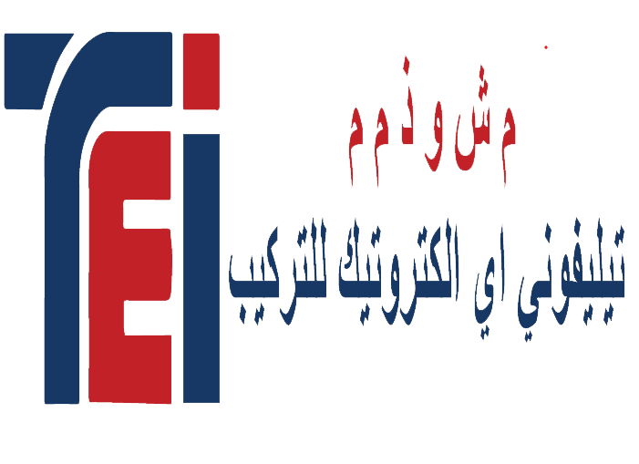

<mat-sidenav-container class="sidenav-container">
  <mat-sidenav class="no-print" #drawer class="sidenav" fixedInViewport
      [attr.role]="(isHandset$ | async) ? 'dialog' : 'navigation'"
      [mode]="(isHandset$ | async) ? 'over' : 'side'"
      [opened]="(isHandset$ | async) === true">
    <mat-toolbar class="menueToolbar no-print">
      <a [routerLink]="[ '/home' ]">
        
      </a>
      </mat-toolbar>
  

       <mat-nav-list>
      <a class="items no-print" mat-list-item routerLink="/MesProjet">Mes projet </a>
      <a class="items no-print" mat-list-item routerLink="/MesClient">Mes Client </a>
      <a class="items no-print" mat-list-item routerLink="/MesProduit">Mes produit </a>
      <a class="items no-print" mat-list-item routerLink="/Comptabilite">Comptabilite </a>
    </mat-nav-list>
  </mat-sidenav>
  
  <mat-sidenav-content>
    <mat-toolbar class="mainToolBar no-print" color="#0597DF" >
      <button 
        type="button"
        aria-label="Toggle sidenav"
        mat-icon-button
        (click)="drawer.toggle()"
        >
        <!--*ngIf="isHandset$ | async"-->
        <mat-icon aria-label="Side nav toggle icon">menu</mat-icon>
      </button>
      <span>Telephonie electrotech
        <a routerLink="setting" style="right: 0px;padding: 0;"> 
          
        </a> 
      </span>
   
    </mat-toolbar>
    <ng-content></ng-content>
  </mat-sidenav-content>
</mat-sidenav-container>
